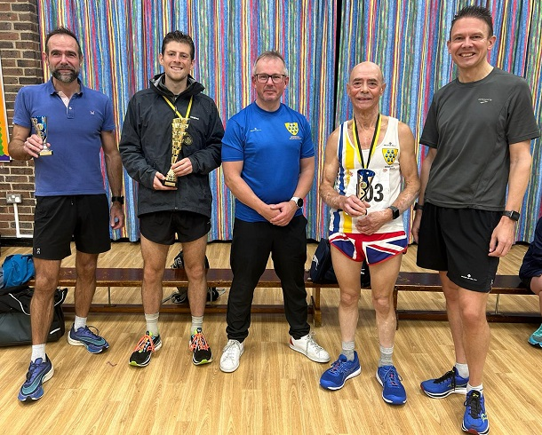

Paul Freeman-Jones was second overall, Sean Leith first M50 and Lionel Stielow first M70 at the Tonbridge 10k on 23rd October.
In addition, Graham Dwyer was second M50 and Alan Male also figured in the results which are here.


23 October 2022
Paul Freeman-Jones was second overall, Sean Leith first M50 and Lionel Stielow first M70 at the Tonbridge 10k on 23rd October.
In addition, Graham Dwyer was second M50 and Alan Male also figured in the results which are here.
